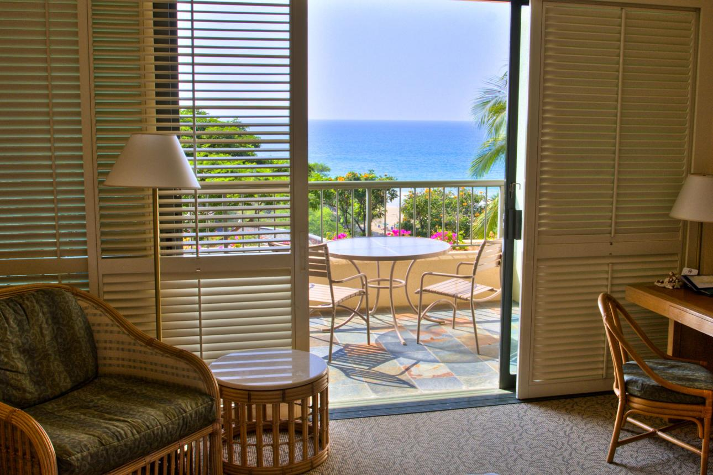
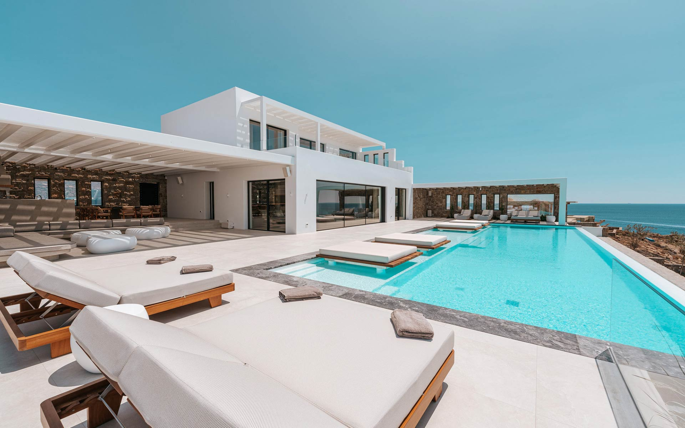

Book ReservationLuxury Resorts
Taniti offers a selection of luxury beachfront resorts designed for travelers seeking comfort and relaxation. These accommodations feature spacious rooms, ocean views, on-site dining, pools, and spa services, providing a high-end experience with direct access to the island’s natural beauty.

Private Villas & Vacation Rentals
For visitors who prefer more space and privacy, Taniti has a variety of private villas and vacation rentals available. These accommodations often include full kitchens, multiple bedrooms, and living areas, making them ideal for families or groups looking for a home-like experience during their stay.

Book ReservationBudget-Friendly Options
Taniti also has a variety of budget-friendly accommodations that provide comfortable and convenient options for travelers on a budget. These options allow you to enjoy the beauty of Taniti without breaking the bank, with easy access to local shops, dining, and transportation.